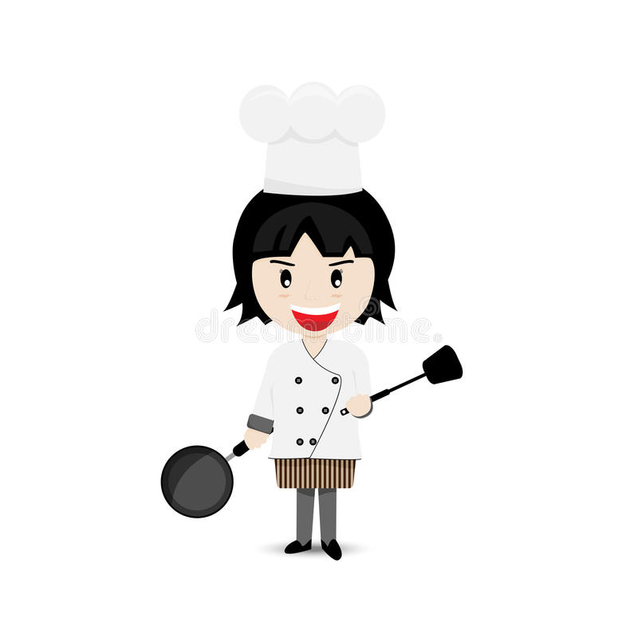
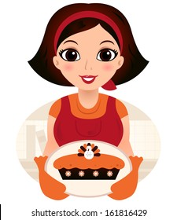

COOKING AS A HOBBY
About myself

I started cooking when I was 15 years old.
It brings a feeling of awesomeness, broadens smiles and my heart blossoms , when friends and relatives appreciate my cooking skils. I love getting engrossed in this and passion intensifies over time!
About my kitchen
GREEN KITCHEN STORIES.

I keep my kitchen clean and arranged while cooking. It makes me feel happy and light from inside!.